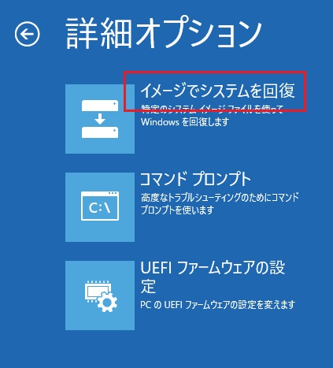

本記事は、マイクロソフト社員によって公開されております。
こんにちは、Windows サポートチームの三浦です。
本日は Windows Server バックアップを利用したベアメタル リストアの手順を紹介させていただきます。
バックアップ手順については、こちら の記事をご参照ください。
制限事項
・同構成への端末へリストアを行うことを前提に設計されているため、ハードウェア構成が大きく異なるサーバーへのリストアを行った場合、リストアが失敗する場合がございます。(異なるサーバー上へのデータ移行を目的とした利用もサポートされておりません。)
・リストア先のディスク サイズがバックアップ取得時点のディスク サイズよりも小さい場合、リストアが失敗する場合がございます。
・取得したバックアップは、バックアップ先のボリューム ルート上に “WindowsImageBackup” フォルダーとして作成が行われますが、本フォルダーの名前を変更している場合や、ボリューム ルート以外のパスに移動している場合は、該当のバックアップがリストア可能なバックアップ データとして認識されない場合がございます。
リストア手順
Windows セットアップ ディスクを挿入してコンピューターの電源を入れ、[Windows のインストール] 画面を表示させ、[次へ] を選択します。
UEFI ベースの環境の場合、”please any key to boot from cd…” が表示されているタイミングで任意のキーを押下ください。※ OS が起動してしまう場合は、BIOS 設定から DVD ドライブからブートを行うように起動順序を変更ください。
- [コンピューターを修復する] を選択します。
- [オプションの選択] 画面が表示されたら [トラブル シューティング] を選択します。
- [詳細オプション] 画面で [イメージでシステムを回復] を選択します。

- リストア対象の端末の OS を選択します。
- [コンピューター イメージの再適用] 画面が表示されます。
バックアップをローカル ディスクに保存している場合は、 [システム イメージを選択する] を選択して “手順17” へお進みください。
バックアップをネットワーク上の共有フォルダーへ保存している場合は、”このコンピューター上にシステム イメージが見つかりません” のメッセージが表示されますので、[キャンセル] を選択します。
[Shift + F10] を押下し、コマンド プロンプトを起動します。
下記のコマンドを実行して、ネットワークの初期化を行います。
wpeutil InitializeNetwork
下記のコマンドを実行して、イーサネットの Idx 番号を確認します。
netsh int ipv4 show int
下記のコマンドを実行して、IP アドレスとサブネット マスク、デフォルト ゲートウェイを設定します。
netsh interface ipv4 set address <Idx の値> static <IP アドレス> <サブネット マスク> <デフォルト ゲートウェイ>
- ipconfig コマンドを実行し、IP アドレスが正しく設定されていることが確認できましたら、コマンド プロンプトを終了します。
- [システム イメージ バックアップの選択] で [システム イメージを選択する] を選択し、[次へ] をクリックします。
- [復元するコンピューターのバックアップの場所を選択してください] で [詳細設定] を選択します。
- [ネットワーク上のシステム イメージを検索する] を選択します。
- [ネットワーク フォルダー] にバックアップの保存先の UNC パス (\<IP アドレス><ファイル共有>) を入力し、[OK] を選択します。
- [ネットワーク資格情報の入力] 画面でバックアップの保存先にアクセスするための資格情報を入力して [OK] を選択します。

- [復元するコンピューターのバックアップの場所を選択してください] 画面で対象のバックアップを指定して [次へ] を選択します。
- [復元するシステム イメージの日時を選択してください] 画面でリストア対象のバックアップ日時を指定して [次へ] を選択します。
- [他の復元方法を選択してください] で既定の状態で [次へ] を選択します。
- [完了] を選択します。
- 復元対象のデータが置き換えられる旨の警告メッセージが表示された場合は、[はい] を選択ください。
以上の手順でリストア作業が開始されます。
NIC やディスクが認識されない場合
上記の “手順9” で NIC が表示されない場合、該当の NIC に必要なドライバーが不足している可能性が考えられます。
この場合、ご利用の NIC ベンダー様の Web サイトなどからドライバーを入手いただき、下記の手順でドライバーのインストールを行ってください。
※ 接続済みのディスクが認識されない場合も、必要なディスク ドライバーが不足している可能性が考えられるため、同様の手順でドライバーのインストールをお試しください。
Windows セットアップ ディスクを挿入してコンピューターの電源を入れ、[Windows のインストール] 画面を表示させ、[次へ] を選択します。
UEFI ベースの環境の場合、”please any key to boot from cd…” が表示されているタイミングで任意のキーを押下ください。※ OS が起動してしまう場合は、BIOS 設定から DVD ドライブからブートを行うように起動順序を変更ください。
- [コンピューターを修復する] を選択します。
- [オプションの選択] 画面が表示されたら [トラブル シューティング] を選択します。
- [詳細オプション] 画面で [イメージでシステムを回復] を選択します。
- リストア対象の端末の OS を選択します。
- [コンピューター イメージの再適用] 画面で [システム イメージを選択する] を選択します。
- [復元するコンピューターのバックアップの場所を選択してください] で [詳細設定] を選択します。
- [ドライバーをインストールする] を選択します。
- デバイスのインストール メディアの挿入を促すメッセージが表示されますので、挿入されているインストール メディアを取り出し、ドライバー ファイルを配置したメディアを挿入して [OK] を選択後、必要な inf ファイルや sys ファイルを選択してドライバーのインストールを行います。
※ 必要なドライバー ファイルは、ご利用の製品ベンダー様の Web サイトなどから事前に入手ください。
以上でドライバーのインストール作業は完了となります。
リストア作業を続行し、NIC やディスクが正しく認識されるかご確認ください。
いかがでしたでしょうか。本投稿が少しでも皆様のお役に立てば幸いです。 本情報の内容（添付文書、リンク先などを含む）は、作成日時でのものであり、予告なく変更される場合があります。